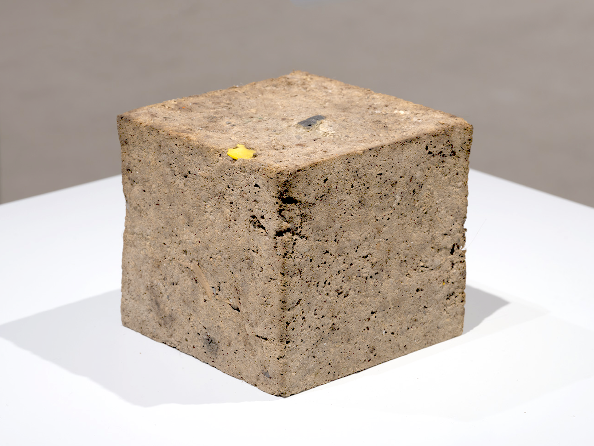

Precipitation for an Arid Landscape, 2021, Copal, dust from the Peabody Museum of Archaeology and Ethnology’s storage, institutional structure for rainwater, rainwater.

Proposal For The Reconstituting Of Ritual Elements For The Sun Pyramid At Teotihuacan, 2019
Polyurethane, acrylic and letter to Juan Manuel Garibay Barrera, National Museums and Exhibitions Coordinator, INAH (History and Anthropology National Institute), Mexico.

Out of an instance of expiration comes a perennial showing, 2022- ongoing
Propagated spores from the British Museum and potato dextrose agar on muslin
Variable ie 68 x 118 in.

Leaving the institution through cremation is easier than as a result of a deaccession policy, 2021,
Document 8.5 x 11 in.

Precipitation for an arid landscape, 2021-ongoing
Copal, dust from the Peabody Museum storage, institutional structure for rainwater and rainwater.
Dimension variable.